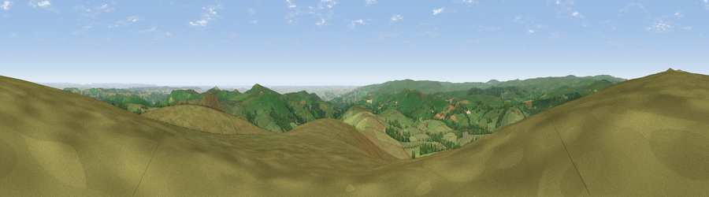

Viewpoint near Widecombe-in-the-Moor
#2036 in England · top 2% of its area beats it · near Widecombe-in-the-Moor · open accessWhere it is
The exact computed spot (SX 70875 78775). Click the marker for map links.
Public access: this spot lies on mapped open-access land (CRoW Act 2000) — you may roam here on foot. Computed from Natural England's CRoW access layer and OpenStreetMap rights of way — not the legal definitive map. Always verify locally.
The view, rendered

A 360° render of this exact spot computed from the terrain model, tree cover and land cover — summer colours, afternoon light, calibrated against photographs of famous viewpoints. Real trees, hedges and buildings will differ in detail.
The panorama
Grey silhouette: terrain skyline in each direction (720 bearings, Earth curvature and refraction included). Dashed green: skyline with trees (+15 m) and buildings (+8 m) as obstacles. Blue strip: how far the ground is visible on each bearing.
Where the view opens
Wedge length = distance to the farthest visible ground on that bearing (vegetation-aware). Rings at 10, 25 and 50 km.
What fills the view
84% grassland · 13% woodland · 1% cropland ·
Angular shares of the visible panorama (visual magnitude), not map area. Landscape diversity 0.23 (0–1 Shannon).
Key numbers
More beautiful places nearby
The staircase of upgrades: each row has a higher view potential than everything closer. Driving times are estimates from straight-line distance, calibrated against real road routing — check an actual route before setting out.
| Place | Direction | Drive | Score |
|---|---|---|---|
| Chinkwell Tor | ESE · 2 km | ~6 min | 77.5 |
| Viewpoint near North Bovey | NNE · 4 km | ~9 min | 79.3 |
| Cairn | E · 5 km | ~12 min | 79.8 |
| Viewpoint near Haytor Vale | E · 6 km | ~13 min | 80.1 |
| Viewpoint near Buckland in the Moor | SSE · 6 km | ~13 min | 80.7 |
| Viewpoint near Dousland | WSW · 18 km | ~31 min | 81.0 |
| Shell Top | SW · 19 km | ~32 min | 81.8 |
| Viewpoint near Kenton | E · 22 km | ~36 min | 82.9 |
50.59438, -3.82569 · source: screening · position refined by local search. Computed location — check access rights before visiting.